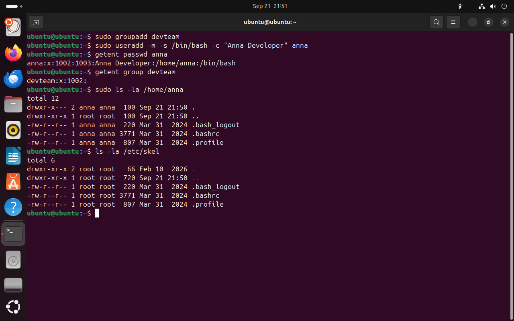
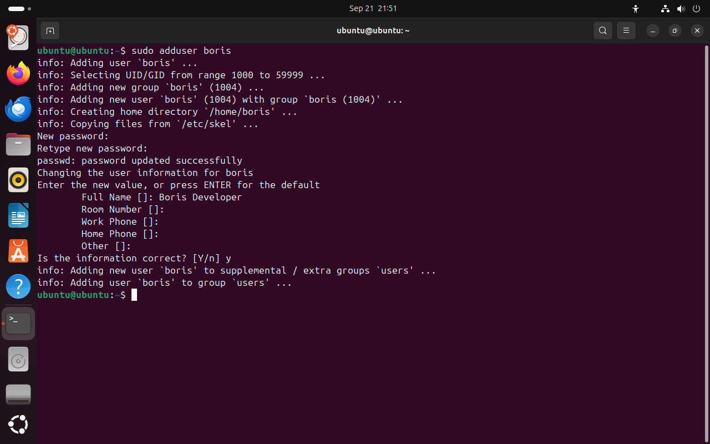
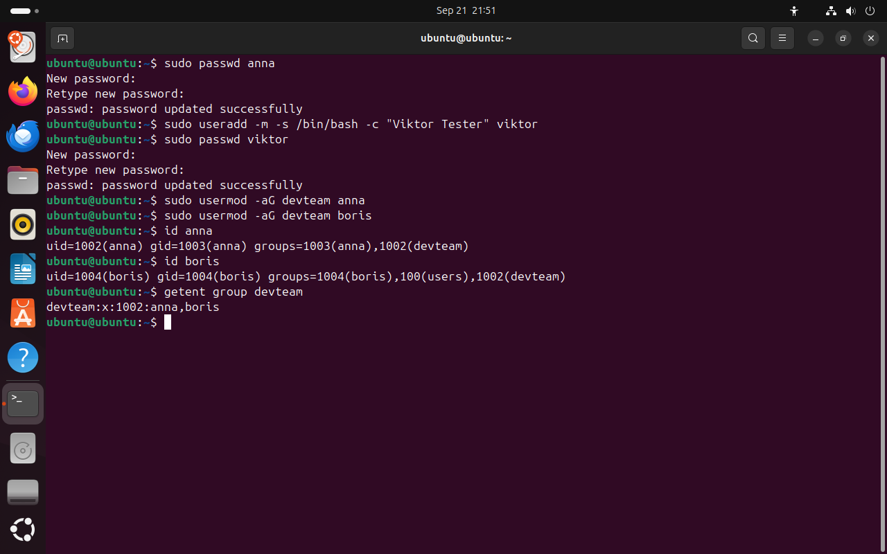
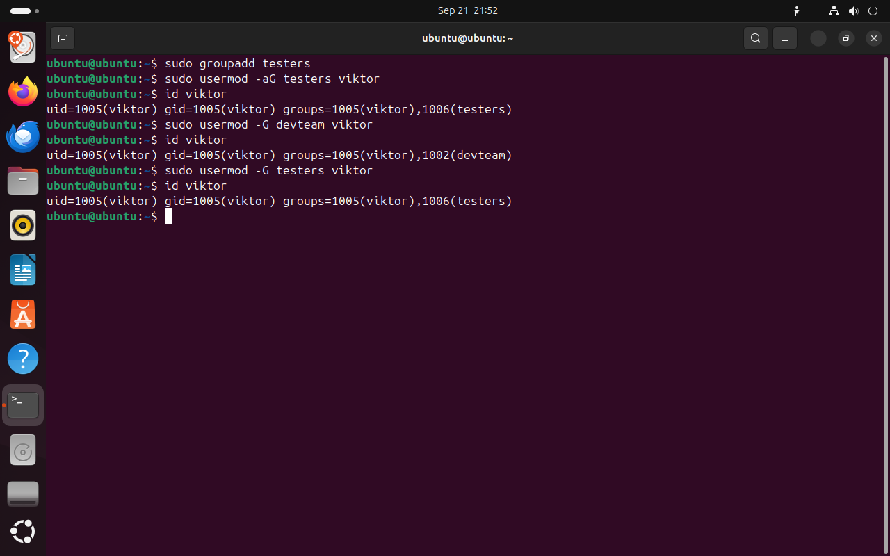
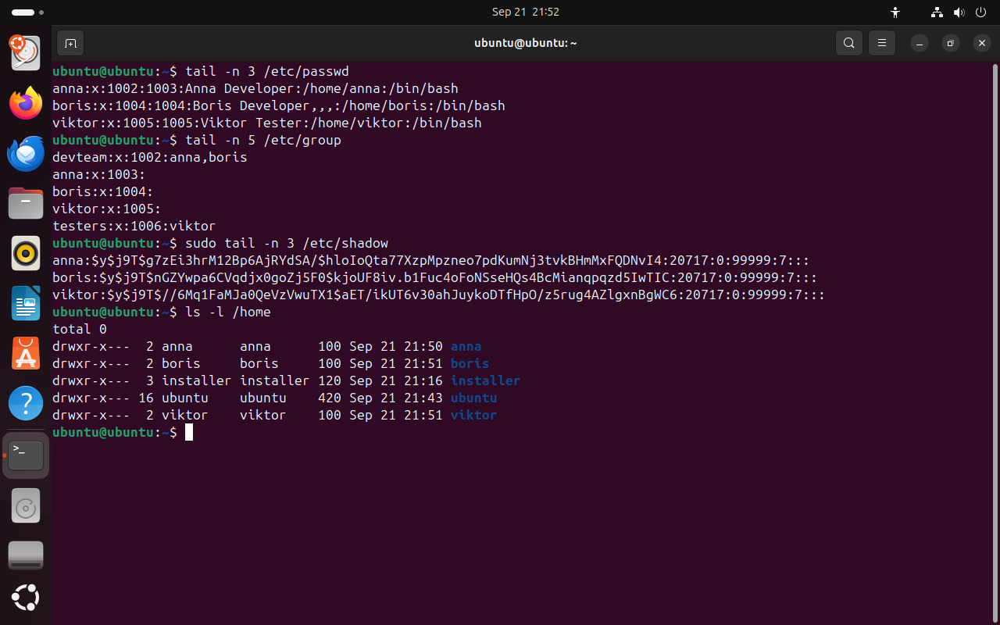

Часть 5 из 7
Создание пользователей и групп
В этой части создадим учётные записи для условной команды разработки: двух разработчиков anna и boris, тестировщика viktor и общую группу devteam, а затем проверим, что изменилось в системных файлах.
5.1 Группа и пользователь: groupadd и useradd
Условная команда разработки состоит из двух разработчиков, Анны и Бориса, и тестировщика Виктора. Разработчикам нужен общий каталог с исходным кодом, тестировщику доступ к нему не нужен. Для этого создадим группу devteam и три учётные записи. Все команды этой части меняют системные файлы, поэтому выполняются через sudo.
Команда groupadd создаёт группу: добавляет строку в /etc/group и выдаёт свободный GID. Команда useradd создаёт учётную запись. Без ключей она создаёт только строку в /etc/passwd, поэтому нужные свойства указывают ключами.
| Ключ useradd | Что делает |
|---|---|
-m | создать домашний каталог /home/имя и скопировать в него файлы из /etc/skel |
-s /bin/bash | оболочка после входа; без ключа в Ubuntu записывается /bin/sh |
-c "Anna Developer" | комментарий: полное имя |
-G группы | дополнительные группы через запятую |
Каталог /etc/skel (skeleton — «каркас») содержит файлы, которые получает каждый новый пользователь: настройки оболочки .bashrc, .profile и .bash_logout. Если администратору нужно, чтобы у всех новых пользователей была одинаковая настройка, её кладут в /etc/skel.
sudo groupadd devteam# новая группачто делает
Что делает команда. Создаёт группу devteam.
По частям:
sudo- выполнить команду от имени другого пользователя, по умолчанию root
groupadd- создать группу
devteam- имя новой группы
sudo useradd -m -s /bin/bash -c "Anna Developer" anna# учётная запись с домашним каталогомчто делает
Что делает команда. Создаёт учётную запись anna с домашним каталогом, оболочкой bash и полным именем.
По частям:
sudo- выполнить команду от имени другого пользователя, по умолчанию root
useradd- создать учётную запись
-m- создать домашний каталог и скопировать файлы из /etc/skel
-s /bin/bash- оболочка после входа: /bin/bash
-c "Anna Developer"- комментарий: "Anna Developer"
anna- имя новой учётной записи
getent passwd annaчто делает
Что делает команда. Выводит строку учётной записи anna.
По частям:
getent- получить запись из системной базы данных
passwd- база учётных записей
anna- какая запись
getent group devteamчто делает
Что делает команда. Выводит строку группы devteam вместе со списком участников.
По частям:
getent- получить запись из системной базы данных
group- база групп
devteam- какая запись
sudo ls -la /home/anna# домашний каталог annaчто делает
Что делает команда. С правами root выводит содержимое домашнего каталога anna со скрытыми файлами.
По частям:
sudo- выполнить команду от имени другого пользователя, по умолчанию root
ls- вывести содержимое каталога
-l- подробный список: права, владелец, группа, размер
-a- показать и скрытые файлы
/home/anna- что показать (абсолютный путь)
ls -la /etc/skel# откуда взялись файлычто делает
Что делает команда. Выводит файлы каталога-образца, которые копируются каждому новому пользователю.
По частям:
ls- вывести содержимое каталога
-l- подробный список: права, владелец, группа, размер
-a- показать и скрытые файлы
/etc/skel- что показать (абсолютный путь)
- 1UID 1002: номер 1001 занят записью installer Live-сеанса
- 2личная группа anna получила GID 1003: номер 1002 уже у devteam
- 3группа devteam создана без участников
- 4домашний каталог принадлежит anna
- 5файлы скопированы из /etc/skel
{kind=link}

Весь снимок ↗useradd создал учётную запись, личную группу и домашний каталог с файлами из /etc/skel.
Что показывает снимок. useradd создал запись anna с UID 1002 и личной группой 1003; группа devteam пока без участников; в домашний каталог скопированы файлы /etc/skel.
Где это пригодится. useradd с ключами используют в скриптах подготовки сервера: команда не задаёт вопросов и одинаково работает при каждом запуске.
На снимке видно, что UID и GID одной учётной записи не обязаны совпадать. Номер группы anna — 1003, потому что 1002 уже заняла группа devteam. Система работает с номерами, и такое расхождение ни на что не влияет.
5.2 Интерактивное создание: adduser
В Ubuntu есть вторая команда — adduser. Это программа-надстройка над useradd: она сама создаёт личную группу и домашний каталог, выбирает оболочку, запрашивает пароль и полное имя. Ключи запоминать не нужно, поэтому для ручного создания пользователей удобнее adduser, а в скриптах пишут useradd с ключами.
Пароль вводится дважды, набранные символы на экране не отображаются — даже звёздочками. Остальные вопросы можно пропустить клавишей Enter. Пустые поля комментария сохраняются запятыми: в строке boris будет Boris Developer,,,.
sudo adduser boris# создание с вопросамичто делает
Что делает команда. Создаёт учётную запись boris по шагам: группа, пользователь, домашний каталог, пароль и полное имя.
По частям:
sudo- выполнить команду от имени другого пользователя, по умолчанию root
adduser- создать учётную запись по шагам с вопросами
boris- имя новой учётной записи
Lab-2026-pass# пароль дважды; символы не видныBoris Developer# полное имя; остальные вопросы — Entery# подтвердить данные
- 1adduser создаёт личную группу и пользователя с одинаковым номером
- 2домашний каталог и файлы из /etc/skel
- 3пароль запрашивается дважды; набранные символы не видны
- 4комментарий: полное имя
- 5пользователь добавлен в группу users
{kind=link}

Весь снимок ↗adduser создаёт учётную запись по шагам и задаёт вопросы.
Что показывает снимок. adduser создал группу и пользователя boris с номером 1004, домашний каталог, запросил пароль и полное имя и добавил boris в группу users.
Где это пригодится. Для ручного создания пользователя на рабочей машине adduser удобнее: команда сама задаёт нужные вопросы.
5.3 Пароль и дополнительные группы
Учётная запись, созданная useradd, пароля не имеет, и войти под ней нельзя. Пароль задаёт команда passwd имя. Обычный пользователь командой passwd без имени меняет только свой пароль и сначала вводит старый; администратор через sudo задаёт пароль любому пользователю без старого.
В группу пользователя добавляет команда usermod -aG группа имя. Ключ -G задаёт дополнительные группы, ключ -a (append — «добавить») означает, что новая группа добавляется к уже существующим. Членство вступает в силу при следующем входе пользователя в систему: процессы, запущенные раньше, продолжают работать со старым списком групп.
sudo passwd anna# пароль annaчто делает
Что делает команда. Задаёт пароль учётной записи anna; пароль вводится дважды.
По частям:
sudo- выполнить команду от имени другого пользователя, по умолчанию root
passwd- задать пароль или показать его состояние
anna- чей пароль
Lab-2026-pass# пароль дваждыsudo useradd -m -s /bin/bash -c "Viktor Tester" viktor# тестировщикчто делает
Что делает команда. Создаёт учётную запись viktor с домашним каталогом и оболочкой bash.
По частям:
sudo- выполнить команду от имени другого пользователя, по умолчанию root
useradd- создать учётную запись
-m- создать домашний каталог и скопировать файлы из /etc/skel
-s /bin/bash- оболочка после входа: /bin/bash
-c "Viktor Tester"- комментарий: "Viktor Tester"
viktor- имя новой учётной записи
sudo passwd viktorчто делает
Что делает команда. Задаёт пароль учётной записи viktor.
По частям:
sudo- выполнить команду от имени другого пользователя, по умолчанию root
passwd- задать пароль или показать его состояние
viktor- чей пароль
Lab-2026-pass# пароль дваждыsudo usermod -aG devteam anna# anna в devteamчто делает
Что делает команда. Добавляет anna в группу devteam, сохраняя остальные группы.
По частям:
sudo- выполнить команду от имени другого пользователя, по умолчанию root
usermod- изменить учётную запись
-a- добавить к имеющимся группам
-G- дополнительные группы; без -a прежний список групп заменяется целиком
devteam- группа devteam
anna- чью запись изменить
sudo usermod -aG devteam boris# boris в devteamчто делает
Что делает команда. Добавляет boris в группу devteam, сохраняя остальные группы.
По частям:
sudo- выполнить команду от имени другого пользователя, по умолчанию root
usermod- изменить учётную запись
-a- добавить к имеющимся группам
-G- дополнительные группы; без -a прежний список групп заменяется целиком
devteam- группа devteam
boris- чью запись изменить
id annaчто делает
Что делает команда. Выводит номера и группы anna.
По частям:
id- вывести номера пользователя и его группы
anna- чей номер показать
id borisчто делает
Что делает команда. Выводит номера и группы boris.
По частям:
id- вывести номера пользователя и его группы
boris- чей номер показать
getent group devteam# участники группычто делает
Что делает команда. Выводит строку группы devteam вместе со списком участников.
По частям:
getent- получить запись из системной базы данных
group- база групп
devteam- какая запись
- 1пароль сохранён
- 2-aG: добавить группу к уже имеющимся
- 3devteam появилась в списке групп anna и boris
- 4участники группы в /etc/group
{kind=link}

Весь снимок ↗Пароли заданы, anna и boris добавлены в группу devteam.
Что показывает снимок. Пароли anna и viktor заданы; anna и boris добавлены в devteam без потери других групп.
Где это пригодится. Так новый сотрудник получает доступ к ресурсам команды: одна команда usermod -aG вместо настройки прав на каждый каталог.
5.4 Ключ -a в usermod
Ключ -G без -a работает иначе: он задаёт полный список дополнительных групп. Все группы, которых нет в списке, у пользователя пропадают. Если так ошибиться с администратором, он потеряет группу sudo и вместе с ней возможность исправить ошибку.
На снимке viktor сначала получает группу testers правильной командой. Затем usermod -G devteam viktor без -a заменяет весь список: testers пропадает. Последняя команда задаёт список заново — только testers.
sudo groupadd testers# группа тестировщиковчто делает
Что делает команда. Создаёт группу testers.
По частям:
sudo- выполнить команду от имени другого пользователя, по умолчанию root
groupadd- создать группу
testers- имя новой группы
sudo usermod -aG testers viktor# правильно: с -aчто делает
Что делает команда. Добавляет viktor в группу testers, сохраняя остальные группы.
По частям:
sudo- выполнить команду от имени другого пользователя, по умолчанию root
usermod- изменить учётную запись
-a- добавить к имеющимся группам
-G- дополнительные группы; без -a прежний список групп заменяется целиком
testers- группа testers
viktor- чью запись изменить
id viktorчто делает
Что делает команда. Выводит номера и группы viktor или сообщает, что такой записи нет.
По частям:
id- вывести номера пользователя и его группы
viktor- чей номер показать
sudo usermod -G devteam viktor# ошибка: без -aчто делает
Что делает команда. Заменяет весь список дополнительных групп viktor одной группой devteam: testers пропадает.
По частям:
sudo- выполнить команду от имени другого пользователя, по умолчанию root
usermod- изменить учётную запись
-G- дополнительные группы; без -a прежний список групп заменяется целиком
devteam- группа devteam
viktor- чью запись изменить
id viktor# testers пропалачто делает
Что делает команда. Выводит номера и группы viktor или сообщает, что такой записи нет.
По частям:
id- вывести номера пользователя и его группы
viktor- чей номер показать
sudo usermod -G testers viktor# исправить: полный список группчто делает
Что делает команда. Задаёт viktor список дополнительных групп заново: только testers.
По частям:
sudo- выполнить команду от имени другого пользователя, по умолчанию root
usermod- изменить учётную запись
-G- дополнительные группы; без -a прежний список групп заменяется целиком
testers- группа testers
viktor- чью запись изменить
id viktorчто делает
Что делает команда. Выводит номера и группы viktor или сообщает, что такой записи нет.
По частям:
id- вывести номера пользователя и его группы
viktor- чей номер показать
- 1после -aG у viktor есть группа testers
- 2usermod -G без -a
- 3testers пропала, список заменён на devteam
- 4исправление: -G с нужным списком групп
{kind=link}

Весь снимок ↗Без ключа -a команда usermod -G заменяет весь список групп.
Что показывает снимок. Команда без -a заменила группы viktor: testers пропала, осталась devteam; исправление задало список заново.
Где это пригодится. Перед изменением групп администратора проверяют команду: без -a он потеряет группу sudo.
5.5 Что изменилось в системных файлах
Команды useradd, adduser, passwd и usermod меняют те же файлы, которые мы читали в частях 1–3. Новые строки добавляются в конец файлов, поэтому их выводит команда tail: tail -n 3 — последние три строки.
tail -n 3 /etc/passwd# три новые учётные записичто делает
Что делает команда. Выводит три последние строки /etc/passwd — новые учётные записи.
По частям:
tail- оставить только последние строки
-n 3- сколько последних строк оставить: 3
/etc/passwd- абсолютный путь
tail -n 5 /etc/group# новые группычто делает
Что делает команда. Выводит пять последних строк /etc/group — новые группы.
По частям:
tail- оставить только последние строки
-n 5- сколько последних строк оставить: 5
/etc/group- абсолютный путь
sudo tail -n 3 /etc/shadow# хеши паролейчто делает
Что делает команда. С правами root выводит три последние строки /etc/shadow — хеши паролей новых записей.
По частям:
sudo- выполнить команду от имени другого пользователя, по умолчанию root
tail- оставить только последние строки
-n 3- сколько последних строк оставить: 3
/etc/shadow- абсолютный путь
ls -l /home# домашние каталогичто делает
Что делает команда. Выводит домашние каталоги с владельцами и правами.
По частям:
ls- вывести содержимое каталога
-l- подробный список: права, владелец, группа, размер
/home- что показать (абсолютный путь)
- 1пустые поля комментария сохранены запятыми
- 2общая группа devteam и группа testers
- 3$y$ — алгоритм yescrypt
- 4соль — своя у каждой записи
- 5хеш: одинаковый пароль дал три разных хеша
- 6домашние каталоги закрыты для остальных: drwxr-x---
{kind=link}

Весь снимок ↗Новые строки в /etc/passwd, /etc/group и /etc/shadow и домашние каталоги.
Что показывает снимок. В /etc/passwd, /etc/group и /etc/shadow добавились строки новых записей; у одинаковых паролей разные хеши; домашние каталоги закрыты для остальных.
Где это пригодится. Эти строки проверяют после создания пользователей скриптом: всё ли создано так, как задумано.
Итоги части 5
groupaddсоздаёт группу;useradd -m -s /bin/bash -c "…"— учётную запись с домашним каталогом.adduserсоздаёт запись по шагам с вопросами; в скриптах пишутuseradd.passwd имязадаёт пароль;usermod -aG группа имядобавляет в группу.usermod -Gбез-aзаменяет весь список дополнительных групп.- UID и GID одной записи могут не совпадать; одинаковые пароли дают разные хеши.
В отчётСнимок id anna и id boris с группой devteam и снимок tail /etc/group.